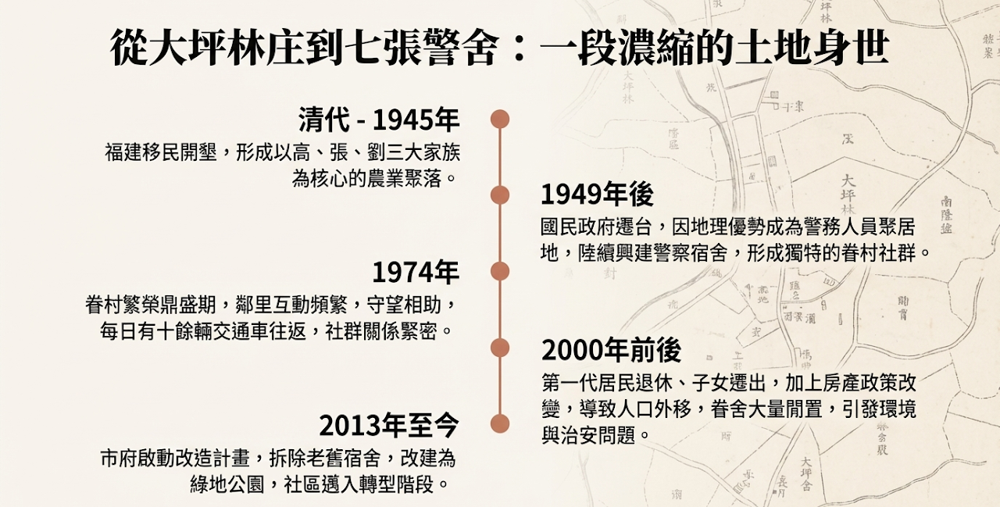
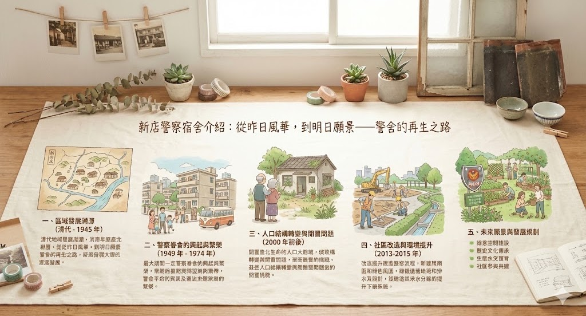
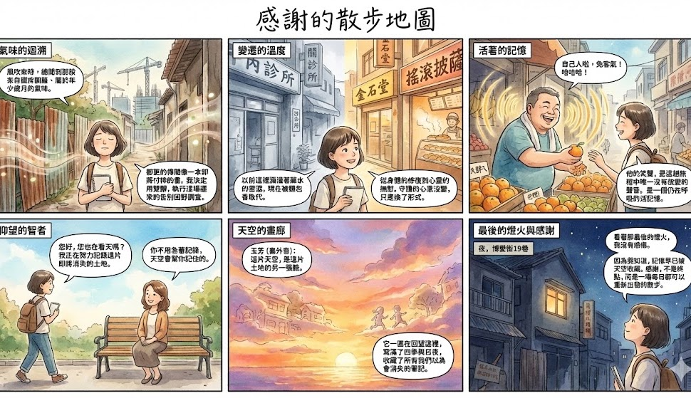
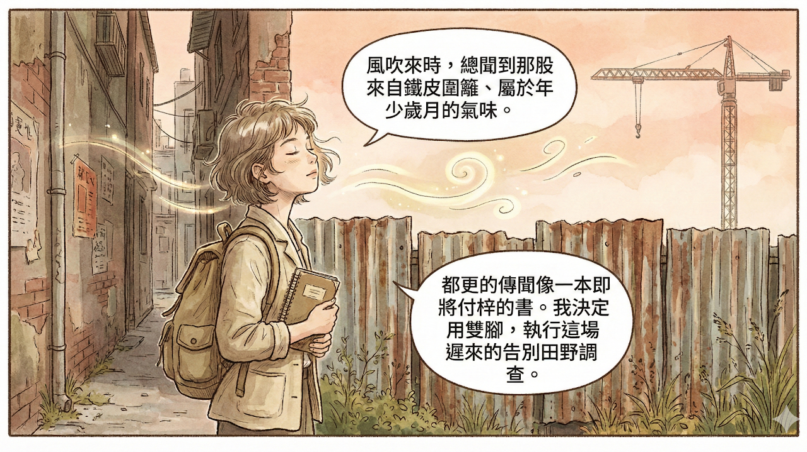
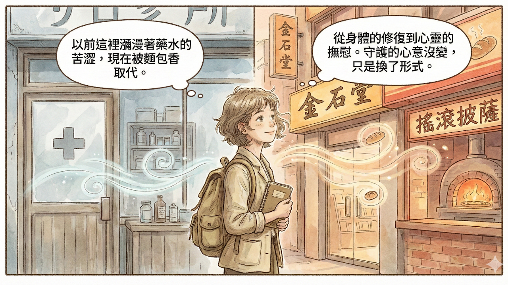
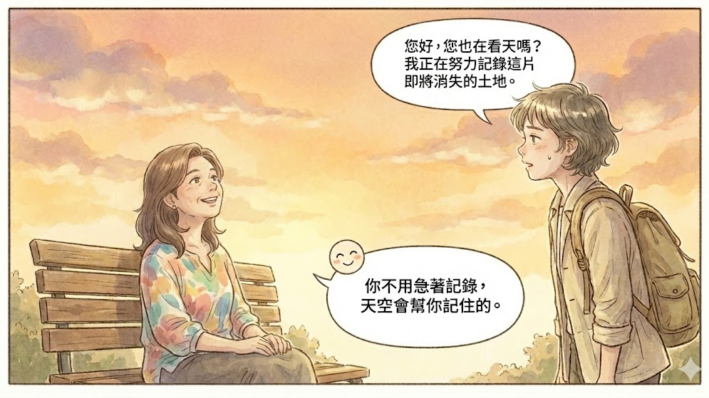
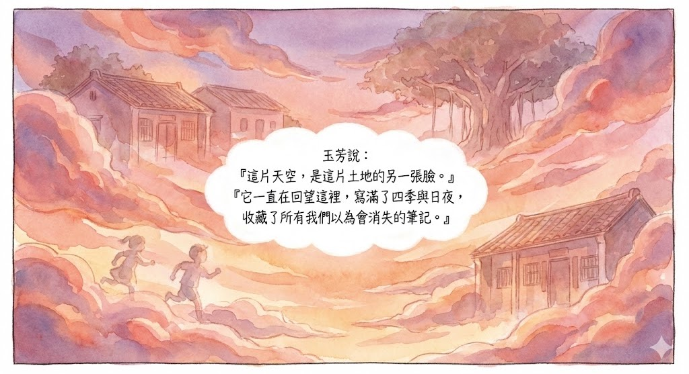
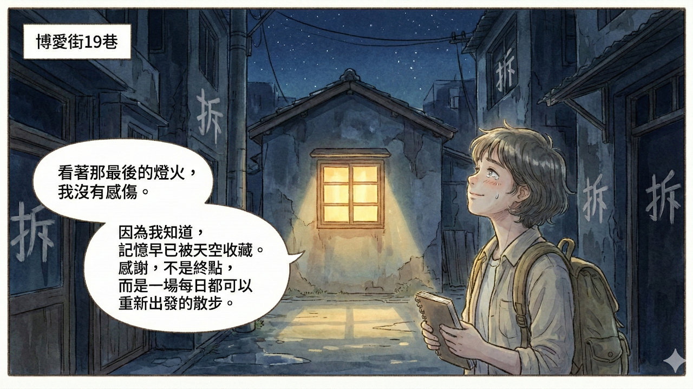
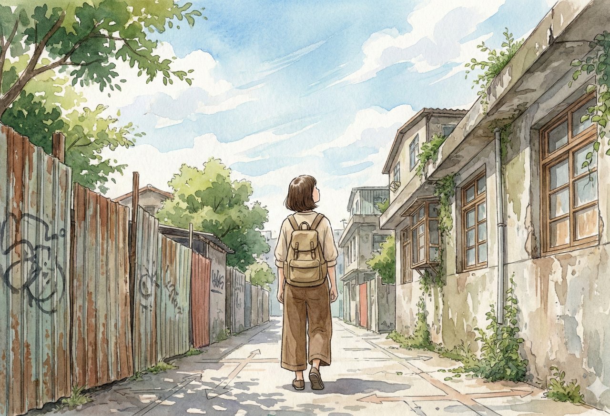
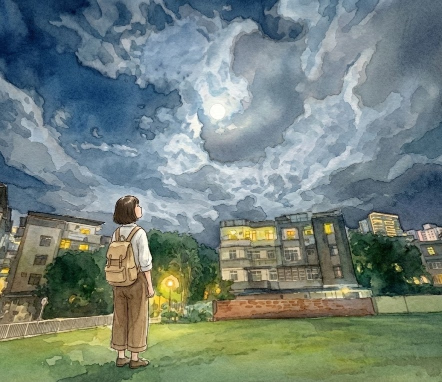

1 首頁走進消失ing的警舍街角
1 首頁走進消失ing的警舍街角
0302社區走讀
2老照片 vs. 現在
3警舍周遭植物圖鑑
4故事仰望的日子
5延伸創作
6警舍地圖*壁報+發想
7Google My Map
8地景對比
9故事財哥
10故事仁愛里的仁愛人
11故事街訪坤哥
12故事警察的家後
13AI幫幫忙上課紀錄
14柯南教你用AI寫故事
15從Line對話到故事
1 首頁走進消失ing的警舍街角
0302社區走讀
2老照片 vs. 現在
3警舍周遭植物圖鑑
4故事仰望的日子
5延伸創作
6警舍地圖*壁報+發想
7Google My Map
8地景對比
9故事財哥
10故事仁愛里的仁愛人
11故事街訪坤哥
12故事警察的家後
13AI幫幫忙上課紀錄
14柯南教你用AI寫故事
15從Line對話到故事
1 首頁走進消失ing的警舍街角
0302社區走讀
2老照片 vs. 現在
3警舍周遭植物圖鑑
4故事仰望的日子
5延伸創作
6警舍地圖*壁報+發想
7Google My Map
8地景對比
9故事財哥
10故事仁愛里的仁愛人
11故事街訪坤哥
12故事警察的家後
13AI幫幫忙上課紀錄
14柯南教你用AI寫故事
15從Line對話到故事
走進消失ing
的警舍街角
警察宿舍歷史時間軸PPT~下圖點一下就可看到完整介紹
新店七張警察眷舍與仁愛里社區發展時間軸 (1).pptx.pdf
從昨日風華，到明日願景
——
警舍的再生之路
一、區域發展溯源（清代 - 1945 年）
仁愛里所屬的大坪林十二張地區，是新店最早開發的平原區域之一，其發展根基可追溯至清代。這一時期，福建泉州安溪籍漢人移民陸續前來開墾，依賴大坪林圳西幹線的灌溉系統開展農業活動，逐漸形成傳統農業聚落。乾隆二十二年，拳頭母官莊設立，大坪林庄進一步細分為七張、十二張等五庄，確立了區域早期行政雛形。
人口結構上，該區域以福佬人為主體，高、張、劉三大家族成為核心族群。其中，張姓為當地大地主，掌控碧潭橋以西大片區域；高姓子孫多定居於現今仁愛市場附近；劉姓後代則主要分布在博愛街 6 巷一帶，家族聚居形態構成了仁愛里早期社群的基礎框架。1945 年光復後，行政區劃調整，該區域隸屬百忍里管轄，直至 1970 年才獨立劃分出仁愛里，同時誕生中山里、和平里等相鄰行政單位。
二、警察眷舍的興起與繁榮（1949 年 - 1974 年）
1949 年國民政府遷台後，新店因臨近台北市的地理優勢，成為公務及警務人員的重要聚居地。為安置大量警眷，公家單位陸續興建警察宿舍、警官宿舍及警務處宿舍，七張警察眷舍便是其中核心組成部分，產權主要隸屬省警務處（署處），同時服務於中央警官學校與警察專科學校。
眷舍建築呈現多樣化特徵，涵蓋獨門獨戶平房、二層樓公寓及四層樓公寓，顯著改變了區域原有地景。1974 年進入眷村繁榮鼎盛期，社群氛圍親切和諧，居民多為同事或師友關係，鄰里互動頻繁、守望相助。交通配套極為完善，警政署處與各眷區間每日運行十餘輛大型交通車，其中三輛直達新店，為居民出行提供極大便利。
三、人口結構轉變與閒置問題（2000 年前後）
進入 21 世紀前後，七張警察眷舍區域面臨顯著人口結構變遷。一方面，第一代居民陸續退休，子女成家後多數搬離眷舍，導致傳統家庭結構瓦解，人口持續外移；另一方面，政府推行房產政策調整，推動四樓以上公寓出售給現住戶，同時鼓勵二樓以下住戶遷出，進一步加速人口外流與社群結構變化。
人口外移直接引發眷區大規模空置現象，尤以警察專科學校宿舍區最為嚴重，長期閒置導致建築荒廢。與此同時，無人管理的閒置空間堆積垃圾廢棄物，嚴重破壞社區環境衛生；廢棄建築更成為治安死角，引發居民安全擔憂，這些問題共同構成日後社區改造的核心驅動因素。
四、社區改造與環境提升（2013-2015 年）
2013 年，新北市政府城鄉發展局啟動跨部門協調，成功推動中央國產署釋出長期閒置的警察宿舍土地，改造計畫正式起步。此次改造以「打通七張捷運站動線、改善通行空間」為首要目標，同步解決環境與治安問題。2014 年 8 月 22 日，市府正式公告招標，規劃將約 1300 坪老舊宿舍區拆除改建為簡易綠地公園；同年 10 月，拆除工程動工，標誌眷舍區轉型進入實質階段。
2015 年，環境改善工程全面鋪開。在綠空間建設方面，通過人車分道設計提升通行安全，建設綠色步道便利捷運通勤，同時打造休憩區域，為居民提供休閒社交場所；在巷弄環境改造上，對原平房區實施全面拆除與土地整平，建設完善排水溝系統解決積水問題，並開展地下管線埋設，顯著提升基礎設施品質，原本雜亂的平房區逐步形成小型社區公園雛形。
五、未來願景與發展規劃
仁愛里社區確立「人文瑠公圳，和美仁愛里」的核心發展願景，計畫深度融合在地歷史與人文特色，打造銜接過去與未來的和諧社區空間，力爭成為新店地區文化與綠意示範單元。針對七張警眷區轉型，規劃聚焦四大方向：
綠意空間建設
：持續完善社區綠地與休憩公園，打造獨特多元的「都市後院」
歷史文化傳承
：重視眷村文化記憶保存，推動文化轉化與創新發展
生態水文復育
：挖掘瑠公圳水文歷史價值，開展生態展示與環境修復
社區參與共建
：鼓勵居民深度參與家園建設，促進社群情感交流與社區意識紮根
最終實現區域全面轉型升級。
一場名為感謝的散步地圖
因往返巨匠美語上課與搭捷運捷徑，我非常喜歡來這散步。這裡的每一條巷弄，每一處轉角，每一縷在空氣中飄散的氣息，都像是一篇篇未完成的田野筆記，等待著被我重新翻閱、解讀與記錄。但更重要的是，我愛上這裡的天空。這片天空，是這座城市最古老、也最變幻莫測的畫廊，而我，是那個願意駐足，細細品味的旅人。
風吹過來的時候，我總覺得聞到一種味道，很淡，但每一次呼吸都像是一種回溯。那是混合了新割草坪的青澀、泥土混著露珠的潮濕，還有一種，來自時間深處的陳舊氣息。它沒有撲鼻而來的濃烈，卻像一篇雋永的散文，從空氣的縫隙裡緩緩滲透出來。這氣味來自那片舊警舍的鐵皮圍籬，它們像是城市的暫時性邊界，劃分出一個不屬於任何人的空間。但對於我來說，這氣味是屬於我的，是屬於我那些回不去的年少歲月。它不為任何物證，只為那段時間，默默地發聲。
我選擇用雙腳來執行這場遲來的告別。我知道，都更的傳聞與規劃圖紙早已在社區裡流傳，像一本早已排定出版的書，只等著付梓。這場旅程，不是懷舊，而是試圖在景物即將消逝的此刻，進行一場個人的「田野調查」。我必須親自走一遍，用我的雙腳、我的眼睛、我的心，去記錄下這片土地最後的模樣，感謝它曾經的慷慨與陪伴。
我走回這條熟悉的街，首先來到生活綠廊小公園。以前這裡是警察宿舍，院子裡擺滿了盆栽，每一盆都像是住戶偷偷放進去的小心願。我記得，那時候孩子們會在盆栽間捉迷藏，阿姨們則圍著聊天，交換著家常與菜譜。現在盆栽不見了，只剩下搖晃的樹影，樹影在地上投下斑駁的光點。我沒有感到失落，反而覺得樹影像是無聲的註腳，為那些已經結束的篇章，留下一個溫柔的句點。
轉過那個角落，就是金石堂和搖滾披薩。這兩種看似不相干的元素，在這裡卻出人意料地和諧。我笑了，那是一種帶著理解與敬意的微笑。這裡以前是診所和藥廠，空氣中總是瀰漫著一種消毒水的味道，一種帶有良藥苦澀與希望的氣味。現在，那種氣味被烤箱裡熱騰騰的麵香取代。這不僅僅是味道的改變，更是一種文化地景的轉變。以前是身體的修復，現在是心靈的撫慰。那種守護的心意，其實沒有改變，只是換了一種形式，更貼近這個時代的脈動。
我抬頭，看到海天公寓拔地而起。它很高，很氣派，像一堵冰冷的牆。但在我眼裡，它不是阻隔，而是一個沉默的旁觀者，靜靜地看著這片土地的變遷。那時候，
孩子
們會在陽台上大聲呼喊，笑聲在空中飛揚，連成一片。現在，高樓裡的每一扇窗都像一個孤島。然而，我沒有感到憤怒，我只是意識到，在時間的洪流中，人的居住形式與社群連結，從來都是一種流動的狀態。那時候的笑聲，其實並沒有消失，只是化為一種更為內斂的存在，棲息在我們的記憶深處。
我轉進博愛街9巷。那棟廢棄的宿舍還站在那裡，屋瓦塌了，窗花也裂了。它像一位垂暮的老人，用破碎的姿態，守著一段被遺忘的歷史。但我不覺得它是廢墟，反而覺得它是一個重要的「時空節點」。它用自己的殘破，提醒著我，曾經在這裡發生過的故事。我靜靜地看著它，心裡沒有感傷，只有一種深刻的感謝，感謝它作為一個見證者，留存至今。
我繼續前行，來到博愛新村的甲棟和乙棟。我忍不住抬頭看那些整齊的窗。三代人在這裡吃飯、做夢、吵架，那些日子平凡得不得了，可比任何高樓都要厚重。這些窗戶，就像是一個個小小的「歷史櫥窗」，展示著曾經在這裡上演過的無數個微小而動人的生命故事。我沒有感到任何失落，反而覺得這些平凡的日常，才是這片土地最珍貴的「非物質文化遺產」。
繼續走，我看到博愛街13巷和25巷之間的廢棄宿舍。花草早就枯了，可我好像還聽得到那些夜深回家的腳步聲，特別是那種怕吵醒家人而輕輕關門的聲音。那是一種細膩的、充滿溫情的關懷。我站在那裡，閉上眼睛，試圖將那聲音、那情感，都永遠刻在我的腦海裡。這聲音，不是單純的物理音波，而是一種情感的共振，一種對家庭與人情的無聲承諾。
我走進博愛街13巷口的大胖ㄟ水果攤。老闆的笑聲像是一盞燈，照亮了整條街，也照亮了我的記憶。他永遠那麼熱情，總會多給一點水果，然後說：「自己人啦，免客氣！」他的笑聲是一種力量，一種將陌生人連結在一起的力量。我向他點頭示意，他的笑聲，是我這趟旅程中，唯一沒有改變的聲音，它是一個「活的」記憶，一個仍在呼吸的文化符號。
當我走進博愛街25巷，我看到那裡的宿舍只剩下一面面斷牆，可那棵龍眼樹還在。它孤單卻很倔強，好像不肯放下那些過去的人。它守著這片殘破的土地，就像一位忠誠的守衛，不願意離去。我看著它，沒有感到任何感傷，我只感到一種敬佩。敬佩它在時間的洪流中，依然堅守的姿態。
來到瑠公圳綠地公園。我先看到芒果樹，枝頭還掛著午後的陽光。再往裡，是原警察宿舍的位置，現在長滿青草，好像整片土地深深吸了一口氣，在積蓄著某種力量。最後我走到櫻花樹前。春天的時候，它開得燦爛極了，就像老房子推開窗，對我說：「你好久不見。」這不是一種單純的擬人化，而是一種對自然與人文景觀和諧共存的感謝。
在北新路二段29巷，草地變得安靜，時間好像在那裡放下了什麼，可又留住了什麼。而臨時小公園四的芒果樹早就被砍掉了。那片天空突然變得好空，但我不覺得是失去，而是為了一個更為開闊的視野。
與玉芳的相遇
這時，我看到一個身影。她坐在長椅上，沒有看手機，而是望著那片無邊的穹蒼。她的手機是她與天空的祕密通道，記錄著每一刻的光影變換。我知道她，她是玉芳，這個公園的常客。
「你好，你也來看天嗎？」她的聲音很輕，像一片雲。
「是的，我在進行一場個人的『回顧』，感謝這片土地的一切。」我坦誠。
玉芳笑了，她的笑容裡沒有任何感傷，只有一種超脫的澄澈：「你不用急著記錄，天空會幫你記住的。」她指了指天空：「這片天空，不只是一片藍，它是這片土地的另一張臉，寫滿了四季與日夜的筆記。
天空的四季變化
春天，天色像剛醒來的孩子，帶著淺淺的鵝黃與青綠，雲朵像剛孵化的絲絨，輕盈地飄過櫻花樹的枝頭。
夏天，陽光從清晨六點，便毫不客氣地灑向芒果樹，將每一片葉子都曬得發亮。中午時分，雲團像巨大的棉花糖，將日頭的毒辣藏起，給了巷弄一片喘息的陰影。而到了黃昏，天邊的雲彩像是失了腮紅害羞的姑娘，又被誰輕輕地畫上了腮紅，從最淡的粉紅到最濃烈的橘紅，將整片天際渲染得熱情而絢爛。
秋天，天高雲淡，天空的藍像是被洗過一般，澄澈得不可思議。雲像被風剪裁過的棉絮，一片片地散落在天際，將瑠公圳綠地的光影拉得細長。
冬天，天空時常陰沉，灰濛濛的，但偶爾放晴，陽光便會溫柔地灑向廢棄宿舍的斷牆，給予殘破一種溫暖的撫慰。
夜晚的天空
而晚上，天空更是另一幅畫卷。月亮從新月到滿月，從殘缺到圓滿，每一種姿態都像在訴說一個完整的故事。晴朗的夜空，星子像碎鑽般散落，與博愛新村甲棟和乙棟的萬家燈火相互輝映。如果遇到暴雨，天色便會變得狂野而無聲，但雨後，一道鮮亮的彩虹橫跨天際，像一座通往希望的橋；那是放下的平靜，一種歷經風雨後的澄澈與釋然。
這片天空，不論是陰晴圓缺，不論是日夜更迭，都與這片土地上的每一棵樹、每一棟老屋、每一個生命緊密相連。你看，天空的美，從來都不是單獨存在的，它總是在回望著這片土地，記錄著它的一切。」
醍醐灌頂的一刻
玉芳的這番話，像一陣清風，吹散了我心中的所有迷惘。我原以為，記憶需要靠建築、靠地景才能留存。但我錯了。真正的記憶，早已被這片天空所收藏，它被刻在每一片雲、每一道光影裡，與時間同步流動。當都更的傳聞與規劃圖紙在社區裡流傳，當高樓拔地而起，這片天際線將不再完整。但我們也終於明白，珍惜這片天空，不只是為了留住地景；更是提醒自己，要在當下，好好看見身邊的人，好好擁抱日常的光影。因為無論是人、事、還是這片天際，一旦錯過，就再也回不去了。
博愛街19巷：最後的燈火
我繼續我的旅程，最後，我停在博愛街19巷。那裡很快就要都更了。有人感嘆：「它們要拆了。」可燈還亮著，好像有人在告訴房子：「記得我最後的樣子。」我站在那裡，看著那扇亮著燈的窗戶，心裡沒有任何感傷，只有一種深深的感謝。感謝它，在最後的時刻，依然發光，提醒著人們，記憶的燈火，永不熄滅。
我走完整條街，心裡突然覺得很溫暖，又很平靜。那些房子、樹木、還有笑聲，雖然不再如初，但它們都還在，用自己的方式守著這裡。這些記憶，就像是這片土地的根，深深地扎在我的心裡。
結語：感謝是一場永不結束的散步
仰望，因此成為一種儀式，一種對生命流動與人情溫度的致敬。這趟散步地圖，不再只是地圖，而是我與過去、現在、與未來的一場溫柔而充滿感恩的對話。我會把這些故事，都放進我的天空裡，用我的仰望，繼續守護著這片土地。
原來，感謝不是一個終點，而是一場可以每天出發的散步。只要願意抬頭仰望，用心感受，就能在平凡的日子裡，發現無數閃閃發光的寶藏。
Google Sites
Report abuse
Page details
Page updated
Google Sites
Report abuse
本篇珍貴影像與田野檔案
共 12 張紀錄照片








